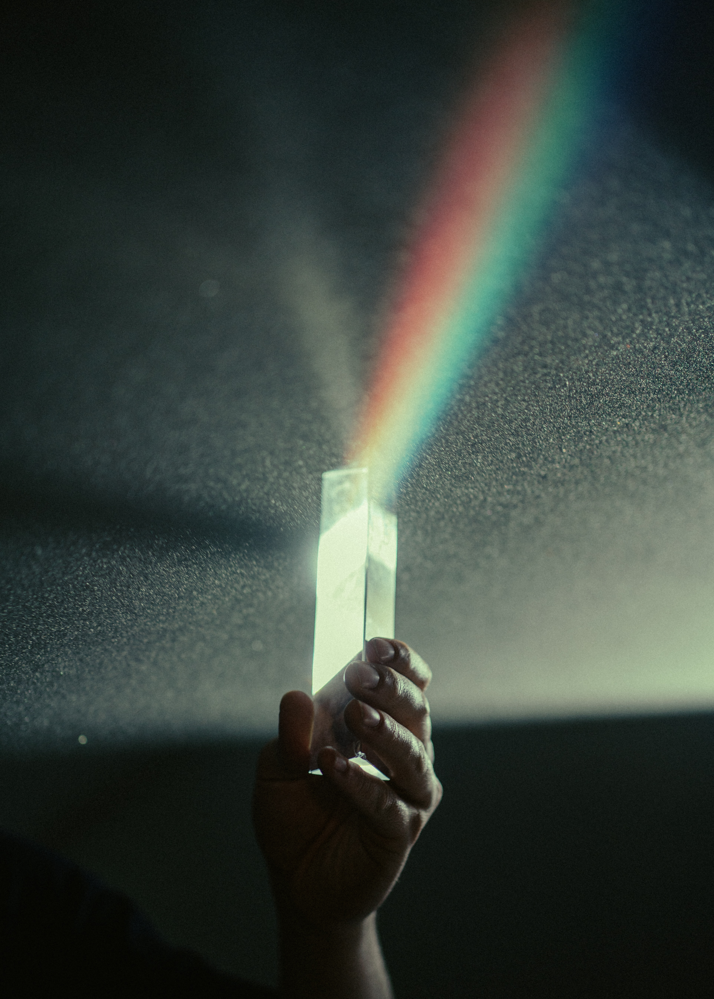

Rainbow

Photo by Braxton Apana on Unsplash
Description
Rainbows make any gathering magical and full of wonder. This recipe is suitable for all levels of skill and is great for beginners. This recipe will focus on two techniques for rainbow joy, each one producing a single rainbow. If several or larger rainbows are desired, this recipe can be scaled extensively.
Ingredients
- White Light Make sure you pick one chock full of wavelengths!
- Refracting Agent This can be raindrops, transparent container of water or a prism*
- Appropriate surface or atmosphere
- Prism: Glass or other transparent object with refracting surfaces at an acute angle with each other that will separate the white light as needed.
Steps
- Position selected white light in front of appropriate surface. If using the atmosphere, keep in mind the rainbow will be most visible against a daytime atmosphere.
- Position refracting agent between the light and the surface.
- If the refracting agent is moveable, play around with moving it to see different shapes and sizes of the rainbow possible.
- When using a natural ingredient, like raindrops or sea spray, consider encouraging wind or cloud movements to better position the refracting agent.
Adapted from: